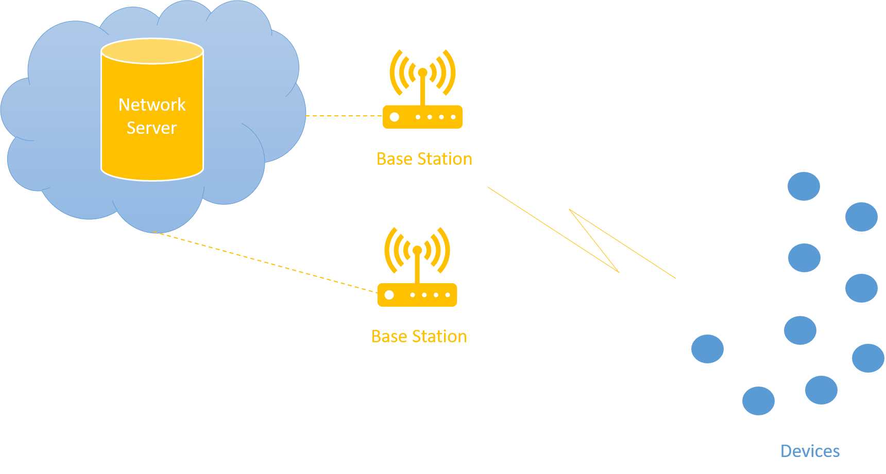
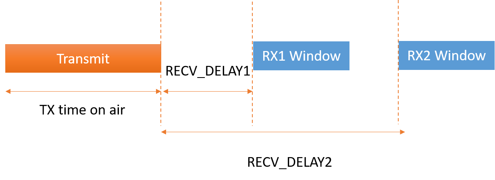
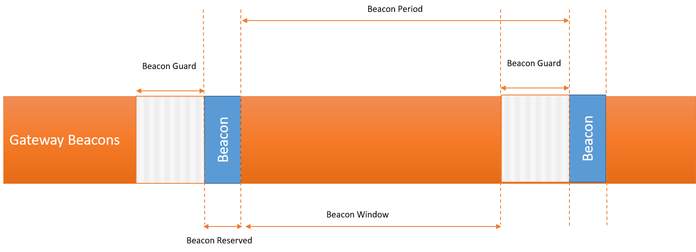
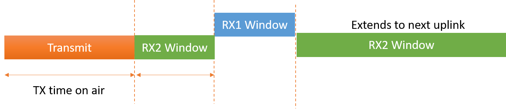
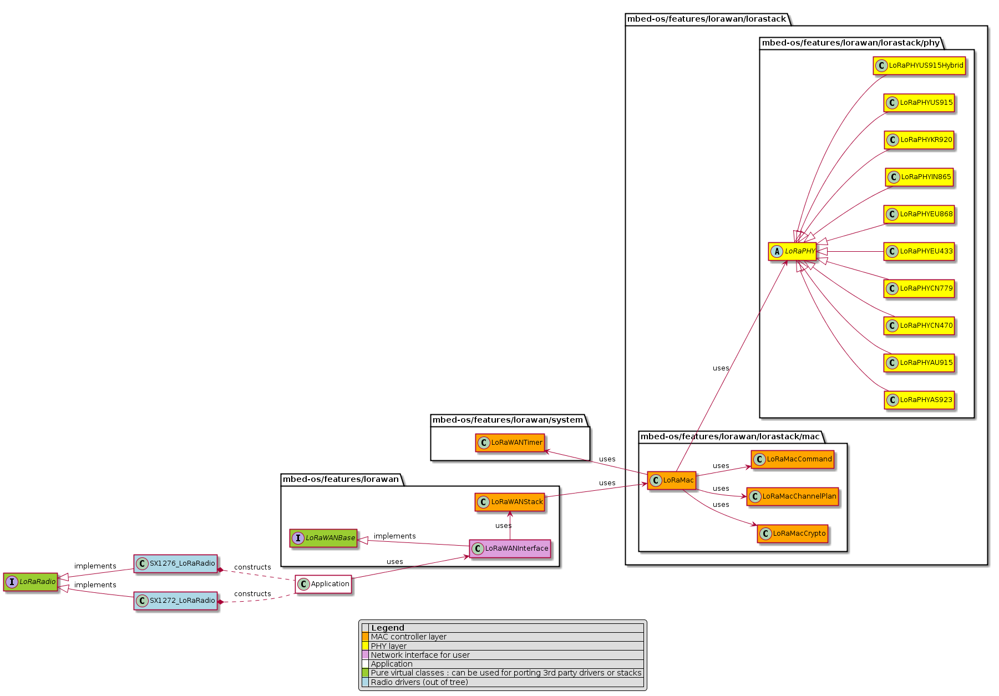
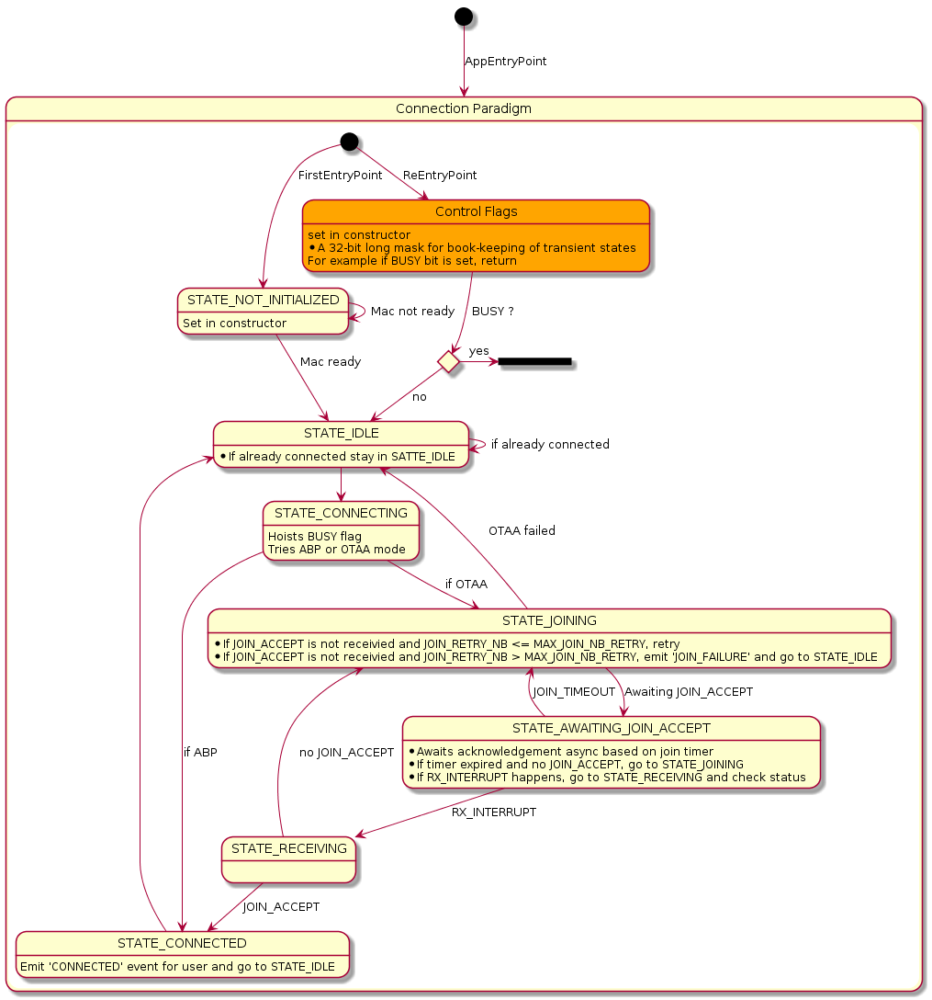
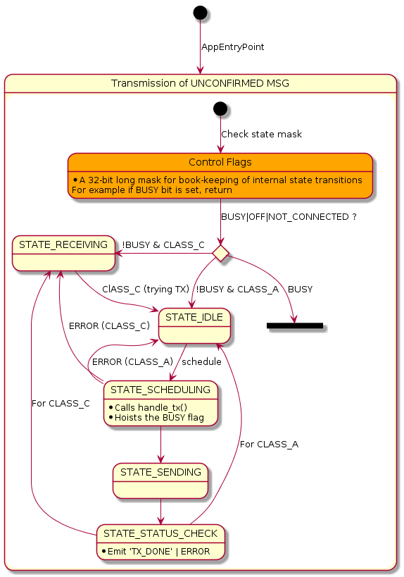
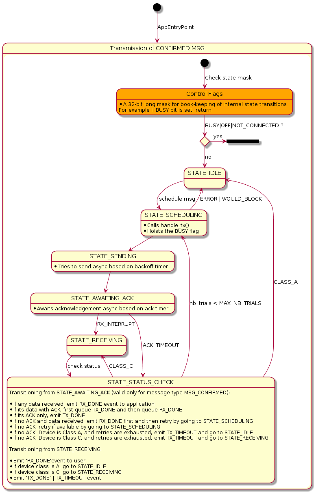
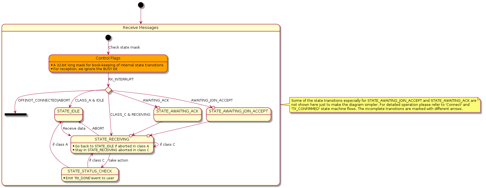

LoRaWAN
LoRaWAN network architecture
A LoRaWAN network consists of three basic network elements:
- Device.
- Base station.
- Network Server.
The base station's job is to speak LoRa with the devices in its coverage area. The real network control lies in the cloud, in other words, the network server.
You can think of a LoRaWAN as a network with virtualized network layer. The devices talk to the network server using LoRaWAN protocol and making a LoRaWAN network. If multiple base stations are listening to your device, all of them forward your packet to the network server, which means that a LoRaWAN device is not localized to a certain cell.
Figure 1: general network architecture
Usually the network topology looks like a one-hop star network. However, there may be cases in which a repeater is involved in the radio path working as a middle-man between the base station and the device. The current standard specification does not allow more than one repeater.
LoRaWAN standard specifications
LoRa Alliance is responsible for standardizing LoRaWAN protocol. There have been two major officially released standard specifications and a few fix versions:
- LoRaWAN Specification v1.0.X.
- LoRaWAN Specification v1.1.
Specification v1.0 and v1.0.X have a few differences. The latest specification v1.1 is largely different in terms of how network control expresses itself. Some of the salient features in v1.1 are the improved security primitives and the support for roaming. All the specifications are backward compatible. Regional Parameters Specifications, which address the regional constraints pertaining to radio regulations across the world, augment these standard documents.
LoRaWAN device classes
LoRaWAN specifications define three distinct types of device classes:
- Class A.
- Class B.
- Class C.
A LoRaWAN device always starts as a Class A device. It can later switch to another class if required. However, Class B and Class C are mutually exclusive.
Class A
Class A is a mandatory device class. All LoRaWAN devices must implement a Class A. This class includes battery powered sensors and actuators with no latency constraints. This is the most energy efficient communication class.
In Class A, the device always initiates a communication cycle. When a device transmits a datagram, it opens two receive windows after specific delays. Timings of these delays and the lengths of receive windows themselves are subjected to regional constraints. The transmission, however, is need based. However, it is scheduled or transmitted based on the duty cycle restrictions following an Aloha-like mechanism.
Figure 2: Class A timing diagram
Class B
Class B devices allow for receive slots at scheduled times. For this purpose, the base station sends out a time synchronous beacon. This makes sure that at this particular time, the receiver, or the device, is listening. The Class B devices are suitable for latency constrained devices, and the devices use slotted communication synchronized with the network beacon.
The base stations transmit a beacon every 128 seconds, and all Class B nodes are assigned a time slot within the 128 second cycle and are told when to listen.
Figure 3: Class B timing diagram
Beacon guard time precedes each beacon, and no ping slot can be placed in that time period. A ping slot is a 30 ms unit that you can assign to a Class B device. Beacon reserved is a time period when the actual beacon is sent. Beacon window is the time period when you can open and assign ping slots.
- Beacon period = 128 seconds.
- Beacon reserved = 2.120 seconds.
- Beacon guard = 3 seconds.
- Beacon window = 122.880 seconds.
In total, there can be 4,096 30ms ping slots in the beacon window.
Note: The Mbed LoRaWAN stack doesn't support Class B at this time.
Class C
Class C devices are main powered or have sufficient amount of power supply available. These devices tend to remain in listening mode when they are not transmitting.
Class C devices listen at RX2 window as often as possible. Such devices need to open an RX2 window immediately after the transmission before opening an RX1 window. In other words, you can use the RECV_DELAY1 time for listening on RX2. At the end of RX1 window, the device opens a continuous RX2 window until another transmission happens.
Figure 4: Class C timing diagram
LoRaWAN connection types
The LoRaWAN specification defines two methods for connecting to an access network.
- Over the air activation (OTAA).
- Activation by personalization (ABP).
Over the air activation (OTAA)
OTAA consists of an exchange of MAC messages between the device and network server. The device sends a JOIN REQUEST to the network server containing an app EUI, a device EUI and device nonce (random value). The device EUI is like a MAC address and uniquely identifies the device in the network. The app EUI is the application identifier allocated to the device by the network server (out of band fashion). The JOIN REQUEST is sent unencrypted to the network server. In response, the network server sends a JOIN ACCEPT message to the device, which is encrypted by the app key, which the network provider provides to the device (out of band) just like the app EUI. The device then uses this app key, app nonce (random value or unique to the network provider), network ID and device nonce (another random value) to locally compute the network session key and app session key.
Activation by personalization (ABP)
Personalized devices have security keys stored in NVRAM (preferably a secure element), and these keys are burned to the device at the time of manufacturing.
Devices configured with ABP are considered connected devices because they don't need to negotiate with the network and can communicate with the network right away. The entities stored in the device consist of a device address and two session keys (network session key and app session key).
LoRaWAN data message types
There are two types of data messages that you can send using the LoRaWAN protocol:
- Unconfirmed messages (fire and forget type of datagrams).
- Confirmed messages (requires acknowledgement) from the other end.
For confirmed messages, going out to the network, or transmitted by the device, the network server sends an acknowledgement within the two RX windows the device opened. If no ack was received, the device waits for a time period equal to a given ack timeout and then retries.
Arm Mbed LoRaWAN stack
Arm Mbed OS comes loaded with a tiny, secure, thread safe LoRaWAN stack (following v1.0.2 of LoRaWAN specification) with a large developer base.
Design architecture
The stack is layered in logical order and is highly configurable. It currently supports Class A and Class C of LoRaWAN devices.
Figure 5: Mbed LoRaWAN stack class hierarchy
There are four design components comprising the Arm Mbed LoRaWAN solution that enrich the application with all the necessary tools to operate as a LoRaWAN device:
- Mbed LoRa radio driver: constructed by the application and passed down to stack.
- Mbed LoRaWAN stack, MAC controller layer: controls the operation of the stack.
- Mbed LoRaWAN stack, PHY layer: computes and provides the regional PHY parameters for processing by MAC controller layer.
- An
EventQueueshared between the application and the stack for synchronization. The application must construct anEventQueueobject and passes it down to the stack.
Note: LoRaPHY is a stack level protocol layer that handles regional parameters, regardless of which radio chip is being used. LoRaRadio is the real instance of a radio driver, controlling the registers and interrupts on the physical chip.
Mbed LoRa radio driver
Mbed LoRa radio drivers reside outside of the Mbed OS tree. Arm provides support for SX1272 and SX1276 LoRa radios, which are the most widely used LoRa end-device radio chipsets.
Arm Mbed OS contains a pure virtual class LoRaRadio, which you can use to inherit from and provide an Mbed LoRa radio driver to complement Mbed applications and the Mbed LoRaWAN stack. You can find a complete reference to the LoRaRadio class in the LoRaRadio API reference.
The LoRa radio drivers support both RTOS and non-RTOS environments. For RTOS environments, the drivers defer interrupts using a thread and signaling mechanism for deferred processing. For non-RTOS environments, the driver shares the user thread. A third party driver, which is an implementation of LoRaRadio class, can use any of the sync methods Mbed OS provides and is free to use any transport for register access internally. The most important prerequisites are:
- The availability of the public APIs outlined by
LoRaRadio. - Acquiring
radio_events_tfrom the MAC controller layer.
radio_events_t is a set of Mbed callbacks that point to the methods in the MAC controller layer to process interrupts that the radio generates. When the application constructs a LoRaRadio object and passes it down the stack, the MAC controller layer binds radio_events_t with the corresponding interrupt processors. The radio driver needs to accept radio_events_t and invoke the appropriate callback for a particular interrupt.
Example: constructing a LoRaRadio object
The application constructs the LoRaRadio object and passes it down to the stack:
SX1272_LoRaRadio radio(PIN_NAMES,...);
LoRaWANInterface lorawan(radio);
Example: internal handling of radio_events_t
The stack sets callbacks in radio_events_t structure and provides these callbacks to the radio driver:
// setting up callbakcs in radio_events_t
radio_events.tx_done = mbed::callback(this, &LoRaWANStack::tx_interrupt_handler);
radio_events.rx_done = mbed::callback(this, &LoRaWANStack::rx_interrupt_handler);
radio_events.rx_error = mbed::callback(this, &LoRaWANStack::rx_error_interrupt_handler);
radio_events.tx_timeout = mbed::callback(this, &LoRaWANStack::tx_timeout_interrupt_handler);
radio_events.rx_timeout = mbed::callback(this, &LoRaWANStack::rx_timeout_interrupt_handler);
_loramac.bind_radio_driver(radio);
radio.lock();
// actual initialization of the radio driver with the radio_events_t
radio.init_radio(&radio_events);
radio.unlock();
Example: radio generating interrupt
The radio driver uses the callbacks it received in the form radio_events_t to notify the upper layers to postprocess an interrupt:
if (signal & GENERATE_TX_DONE) {
radio_events->tx_done();
}
Mbed LoRaWAN stack: MAC controller layer
The MAC controller layer consists of various smaller units. Each unit performs a specific task.
LoRaWANStack class
The LoRaWANStack class is the supervisory unit. It runs the state machine of the stack. At one end, it provides a glue layer for the LoRaWANInterface, which in turn provides a network interface to the application. At the other end, it controls the division of labor, among other units of the system. This class is responsible for handling interrupts that the radio driver generates, managing states and delegating jobs asked by the application to the next lower unit, in other words, the LoRaMac class.
LoRaMac class
The LoRaMac class constitutes the core MAC functionality. It performs the operations the LoRaWANStack delegates and hoists appropriate flags for various MAC indications or confirmation that needs further postprocessing. This class is also resposible for keeping track of timers using LoRaWANTimer, performing crypto operations using LoRaMacCrypto, processing MAC commands using LoRaMacCommand and processing channel plans using LoRaMacChannelPlan classes. Overall, the LoRaMac class processes jobs using smaller units and provides indications or confirmation of the operations performed on the LoRaWANStack.
Although the LoRaWANStack handles the interrupts, the actual controll of the PHY layer (LoRaPHY) lies with LoRaMac. It encodes and writes to the physical radio using the LoRaPHY class on the TX data path and decodes on the RX data path.
LoRaWANTimer class
This class keeps the time base for the stack. It extracts the system time base from the EventQueue for simplicity.
LoRaMacCrypto class
You can use the LoRaMacCrypto class for encoding and decoding LoRaWAN packets using the crypto libraries of Mbed TLS.
LoRaMacCommand class
You can use the LoRaMacCommand class to process incoming MAC commands from the network and produce appropriate responses for those MAC commands in the outgoing messages.
LoRaMacChannelPlan class
You can use the LoRaMacChannelPlan class to facilitate channel planning for a given LoRaPHY.
Mbed LoRaWAN Stack: PHY layer
The stack features an abstract class LoRaPHY that provides PHY layer APIs to upper layers. Figure 5 shows 10 implementations of the LoRaPHY class as per definitions provided in LoRaWAN Regional Parameters Specification (complementary document to LoRaWAN Specification v1.0.2).
The implementations of the LoRaPHY declare these parameters in a structure which APIs then use to compute various system parameters for the upper layer. If needed, they may override a method that LoRaPHY provides; otherwise, an implementation provided in the LoRaPHY is used.
At the moment, it's not possible to change a PHY during run time. You must select a PHY layer before compiling the application using the Mbed configuration system:
"target_overrides": {
"*": {
"lora.phy": {
"help": "LoRa PHY region: EU868, AS923, AU915, CN470, CN779, EU433, IN865, KR920, US915, US915_HYBRID",
"value": "EU868"
}
}
}
EventQueue
The Arm Mbed LoRaWAN stack is event driven. To reduce complexity of the overall system, it uses the EventQueue, which the application passes to the stack. Both share this event queue. This ensures that the both stack and application run in the same context.
There are certain events that the application sends in response to various network level operations. For a detailed discussion of these events, please visit the LoRaWAN events documentation.
Connection procedure
This section discusses flows and corresponding state changes in the Mbed LoRaWAN stack relating to the network connection paradigm. For detailed API reference for connection procedure, please visit LoRaWANInterface API documentation. Look for connect() or connect(lorawan_connect_t) APIs.
Figure 6: connection paradigm flow
The Arm Mbed LoRaWAN stack sends a CONNECTED event to the application once the activation completes. The stack retries a specific number of times before sending a JOIN_FAILURE event to the application if the stack did not receive a JOIN ACCEPT message.
Sending messages
For a detailed API reference for outgoing messages, please visit the LoRaWANInterface API documentation. Look for send() API. For example:
/**send an Unconfirmed message*/
lorawan.send(port, data, length, MSG_UNCONFIRMED_FLAG);
Flows for sending an unconfirmed or confirmed message look like this:
Figure 7: Unconfirmed Message Flow
Figure 8: Confirmed Message Flow
For an unconfirmed message, the stack sends a TX_DONE event to the application when a transmission has happened and both RX window slots are elapsed (in Class C right after transmission as RX2 never gets elapsed in Class C).
For a confirmed message, the stack sends a TX_DONE event to the application when the stack receives the ack. If it does not receive an ack, the stack automatically retries for a given number of times and adapts data rates if necessary.
A TX_TIMEOUT or a TX_FALURE event is generated in case of error in TX data path.
Receiving messages
For detailed API reference for outgoing messages, please visit the LoRaWANInterface API documentation. Look for receive() APIs.
There are two types of receive() methods in the stack. The first is POSIX-like, and you need to tell at what port (instead of a socket ID in Posix format) you wish to receive:
/**this means receive any confirmed or unconfirmed message at port my_port*/
lorawan.receive(my_port, buffer, length, MSG_UNCONFIRMED|MSG_CONFIRMED_FLAG);
// OR
/** Port and flags are given out*/
lorawan.receive(data, length, port_out, flags_out);
Receive APIs return LORAWAN_STATUS_WOULD_BLOCK if there is nothing to read. The RX_DONE event informs the application when the stack receives something for the application. In response to this event, the application can choose to use any of the receive methods given above to retrieve received data.
The flow for reception looks like this:
Figure 9: Receive Message Flow
Automatic handling of pending data and MAC commands
By default, the stack handles the case automatically if any data is pending on the network server side waiting to be delivered to the device or if there are any MAC command responses that require an immediate uplink.
- When there is pending data indicated by fPending bit set in the previous downlink message sent by Network Server, the stack will automatically generate an empty outgoing message, if not configured otherwise. Application will not receive a
TX_DONEin this case. The application may receive subsequentRX_DONEevents as per reception of the pending data. - If a MAC command requires an immediate response, the stack generates an empty uplink automatically if not configured otherwise. The
TX_DONEevent is suppressed because it was an automatic uplink.
While the automatic uplink transaction is taking place, you receive a LORAWAN_STATUS_WOULD_BLOCK error message if you attempt to do a data uplink.
The application can modify this behavior and choose not to send automatic uplinks by turning this feature off. For example:
"lora.automatic-uplink-message": {
"help": "Stack will automatically send an uplink message when lora server requires immediate response",
"value": false
}